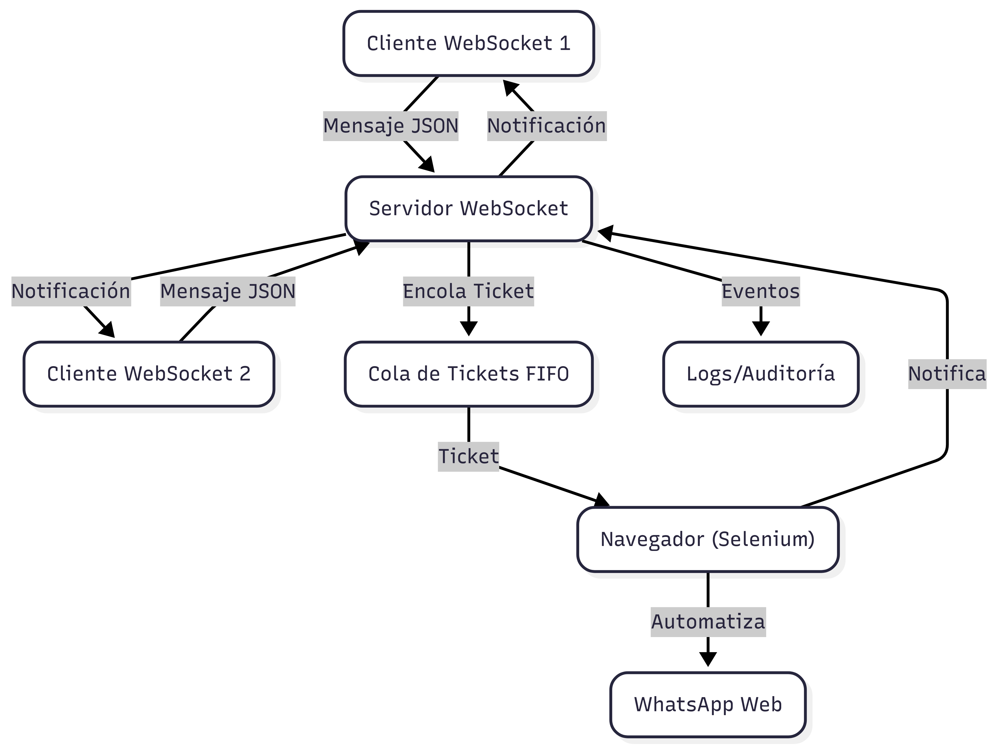
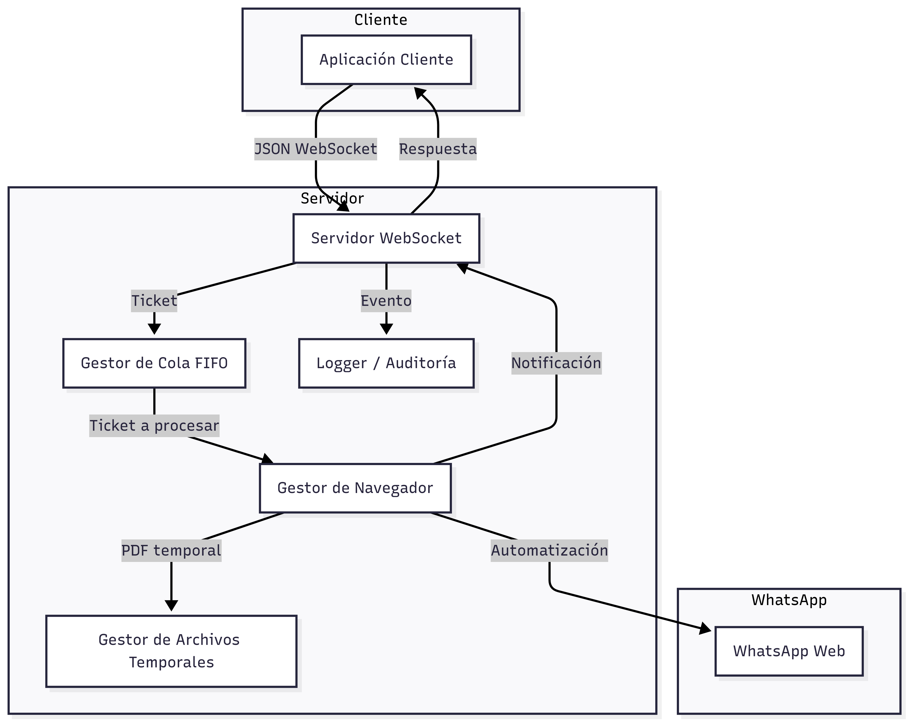
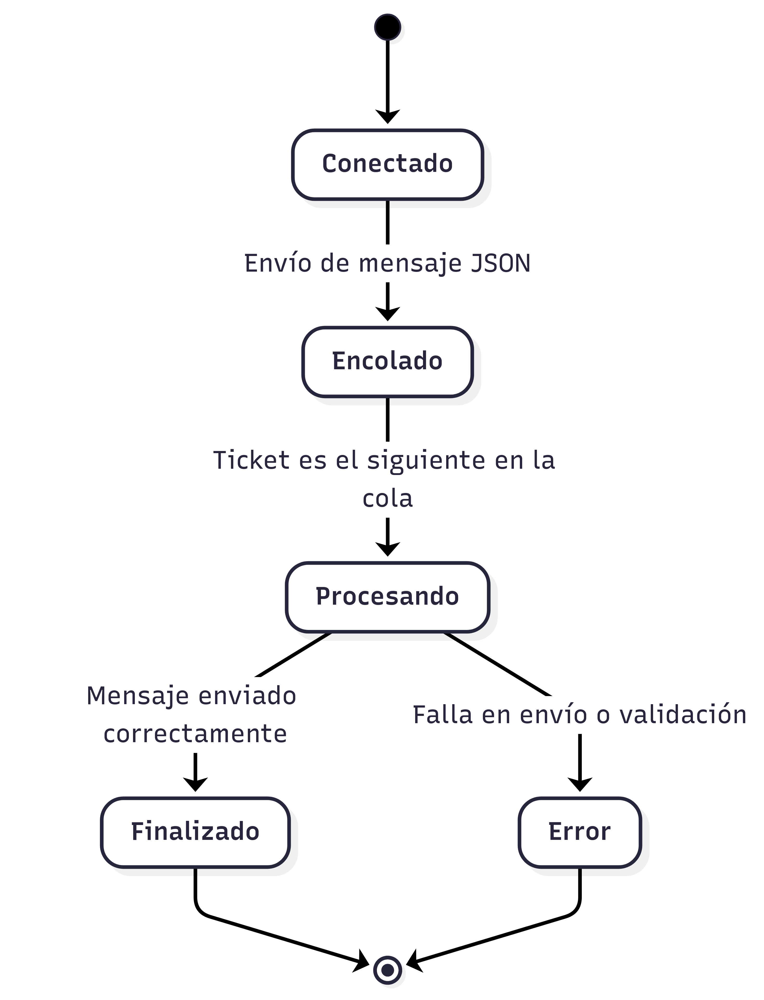
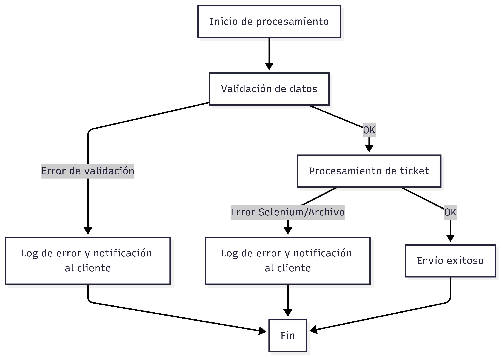
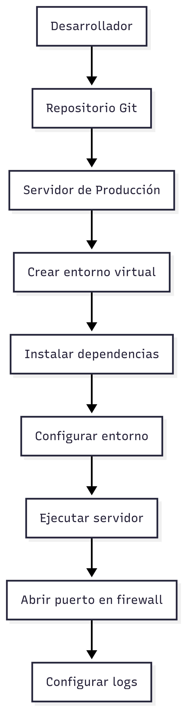

Índice
- Introducción
- Arquitectura General y Sectorización del Código
- Conexión y Configuración
- Formato de Mensajes y Protocolo
- Validaciones y Reglas de Negocio
- Flujo de Estados y Notificaciones
- Ejemplos de Requests y Responses
- Casos de Prueba y QA
- Recomendaciones para Clientes y Buenas Prácticas
- Errores Comunes, Manejo y Troubleshooting
- Notas de Seguridad y Privacidad
- Soporte Multi-Navegador y Escalabilidad
- Monitoreo, Logs y Auditoría
- Despliegue y Operación en Producción
- Preguntas Frecuentes (FAQ)
- Contacto y Soporte
1. Introducción
El WebSocket WhatsAppBot es un microservicio que permite enviar mensajes y archivos PDF a través de WhatsApp Web de manera automatizada, gestionando una cola de tickets y notificando al cliente en cada etapa del proceso. Es ideal para integraciones, bots, notificaciones y sistemas de atención.
2. Arquitectura General y Sectorización del Código
2.1. Estructura de Carpetas y Responsabilidades
- Whatsapp/ (raíz):
main.py,socket_server.py,socket_client.py: scripts principales para iniciar el servidor, cliente y pruebas locales..gitignore,setup.cfg,.coverage: archivos de configuración y control de versiones.
- core/: Lógica central del sistema.
ticket.py: definición y gestión de tickets.utils.py: utilidades generales.
- modules/: Funcionalidades específicas y auxiliares.
web_manager.py: gestión de navegador y automatización con Selenium.queue_manager.py: gestión de la cola FIFO de tickets.browser_profiles/,chrome_profiles/: perfiles persistentes de navegador.
- server/: Implementación del servidor WebSocket y lógica de procesamiento.
ws_server.py: servidor WebSocket, gestión de conexiones, notificaciones y procesamiento de tickets.
- tests/: Pruebas unitarias y de integración.
test_*.py: pruebas para cada módulo principal.
Resumen de Responsabilidades
- main.py / socket_server.py: Arranque del servidor, gestión de conexiones y ciclo principal.
- core/: Lógica de negocio, controladores de sesión, utilidades generales.
- modules/: Validación, manejo de archivos, integración con Selenium y gestión de la cola.
- server/: Implementación de la cola de tickets, notificaciones y procesamiento de tickets.
- tests/: Pruebas automáticas para asegurar la calidad del sistema.
2.2. Flujo General y Diagrama Visual

2.3. Diagrama de Componentes de la Arquitectura

3. Conexión y Configuración
Configuración del Servidor
- Host:
0.0.0.0(todas las interfaces) - Puerto:
3060(configurable) - Navegador:
"chrome","firefox"o"edge" - IP de acceso:
192.168.2.90(debe estar conectado a la VPN interna de la empresa para ser accesible)
Ejemplo de inicialización:
server = WebSocketServer(host="0.0.0.0", port=3060)
await server.start()
Configuración del Cliente
- Host:
192.168.2.90 - Puerto:
3060 - Protocolo:
ws:// - VPN: El cliente debe estar conectado a la VPN interna de la empresa para acceder al servidor.
Ejemplo de conexión:
ws://192.168.2.90:3060
- Si el cliente está en otra red, asegúrate de tener VPN interna o reglas de firewall adecuadas.
4. Formato de Mensajes y Protocolo
Request (Cliente → Servidor):
{
"id": "c1b2a3d4-5678-1234-9abc-abcdef123456",
"metadata": {
"phoneNumber": "3027032694",
"message": "Hola, este es un mensaje de prueba.",
"fileName": "prueba.pdf"
},
"PDF": {
"data": [37, 80, 68, 70, ...] // (opcional) lista de bytes del PDF
}
}
O bien, puedes enviar el PDF como base64:
{
"id": "b1e2c3d4-5678-4abc-9def-1234567890ab",
"metadata": {
"phoneNumber": "3027032694",
"message": "Hola, este es un mensaje de prueba.",
"fileName": "prueba.pdf"
},
"PDF": {
"data": "JVBERi0xLjQKJeLjz9MKMSAwIG9iago8PC9UeXBlL0NhdGFsb2cvUGFnZXMgMiAwIFI+PgplbmRvYmoK..." // (opcional) string base64
}
}
- id: (string, opcional pero recomendado) UUID único generado por el cliente para correlacionar respuestas.
- metadata.phoneNumber: (string, requerido) Número de WhatsApp destino (solo dígitos, con código de país).
- metadata.message: (string, requerido) Mensaje de texto a enviar.
- metadata.fileName: (string, opcional) Nombre del archivo PDF.
- PDF.data: (array de bytes o string base64, opcional) Contenido del PDF.
Response (Servidor → Cliente):
Mensajes de texto plano enviados en diferentes etapas, siempre incluyen el ID del ticket:
🟢 Ticket encolado (ID: c1b2a3d4-5678-1234-9abc-abcdef123456). Hay N ticket(s) antes que el tuyo.🟡 Tu ticket (ID: c1b2a3d4-5678-1234-9abc-abcdef123456) está siendo procesado.✅ Tu ticket (ID: c1b2a3d4-5678-1234-9abc-abcdef123456) ha sido procesado y enviado.- Mensajes de error con prefijo
⚠️o❌, incluyendo elid.
5. Validaciones y Reglas de Negocio
- El mensaje debe ser un JSON válido.
iddebe ser único por ticket (si no se envía, el servidor lo genera).metadata.phoneNumberymetadata.messageson obligatorios y deben ser strings.- Si se incluye
PDF.data, debe ser una lista de bytes o un string base64 válido. - El tamaño máximo del mensaje es 10,000 caracteres.
- El nombre del archivo PDF se sanitiza y se le añade un timestamp para evitar colisiones.
- Si el PDF no puede ser guardado, se notifica con un error.
- El sistema soporta múltiples navegadores y maneja la sesión de WhatsApp Web de forma persistente.
- El PDF se elimina tras ser enviado, pero nunca antes de que el navegador lo procese.
6. Flujo de Estados y Notificaciones
- Conexión: El cliente se conecta al WebSocket.
- Envío: El cliente envía el mensaje JSON con los datos.
- Encolado: El servidor responde con la posición en la cola y el
iddel ticket. - Procesando: El servidor notifica cuando el ticket está siendo procesado, incluyendo el
id. - Finalizado: El servidor notifica cuando el ticket ha sido procesado y enviado, incluyendo el
id. - Desconexión: El cliente puede cerrar la conexión tras recibir la confirmación final.
6.1. Diagrama de Flujo de Estados de un Ticket

2.4. Diagrama de Interacción de Módulos Internos

7. Ejemplos de Requests y Responses
Ejemplo de Response (flujo típico):
🟢 Ticket encolado (ID: c1b2a3d4-5678-1234-9abc-abcdef123456). Hay 2 ticket(s) antes que el tuyo.
🟡 Tu ticket (ID: c1b2a3d4-5678-1234-9abc-abcdef123456) está siendo procesado.
✅ Tu ticket (ID: c1b2a3d4-5678-1234-9abc-abcdef123456) ha sido procesado y enviado.
Ejemplo de Error:
⚠️ 'phoneNumber' es obligatorio y debe ser string.
8. Casos de Prueba y QA
Pruebas Funcionales realizadas
- Caso 1: Enviar solo mensaje de texto (sin PDF).
- Caso 2: Enviar mensaje de texto + PDF válido (en bytes y en base64).
- Caso 3: Enviar mensaje con campos faltantes (
phoneNumber,message). - Caso 4: Enviar varios tickets desde diferentes clientes y verificar el orden de procesamiento y notificaciones (usando el campo
id). - Caso 5: Enviar un PDF con el mismo nombre desde dos clientes distintos y verificar que ambos se procesan correctamente (gracias al timestamp).
- Caso 6: Desconectar el cliente antes de que termine el procesamiento y verificar que el sistema no falla.
- Caso 7: Probar con diferentes navegadores (Chrome, Firefox, Edge).
9. Recomendaciones para Clientes y Buenas Prácticas
- Mantén la conexión WebSocket abierta hasta recibir la confirmación final (
✅). - Si usas otros lenguajes, puedes enviar el PDF como lista de bytes o como string base64 (ambos soportados).
- El campo
ides altamente recomendado para correlacionar respuestas, especialmente si envías múltiples tickets simultáneos. - Maneja los mensajes del servidor como texto plano (no JSON).
- Si necesitas enviar varios tickets, espera la confirmación antes de enviar el siguiente para evitar saturar la cola.
- Si el servidor está detrás de un firewall, asegúrate de abrir el puerto 3060.
- Implementa reintentos y manejo de reconexión en el cliente.
- Valida los datos antes de enviarlos para evitar rechazos por parte del servidor.
- Si el PDF es muy grande, considera comprimirlo antes de enviarlo.
- Si usas base64, asegúrate de que la cadena esté correctamente codificada y sin caracteres extraños.
10. Errores Comunes y Troubleshooting
Errores de Validación
⚠️ Mensaje vacío.: El mensaje enviado está vacío.⚠️ Mensaje demasiado grande.: El mensaje supera el límite de tamaño.⚠️ Mensaje no es un JSON válido.: El mensaje no es un JSON válido.⚠️ 'phoneNumber' es obligatorio y debe ser string.: Falta el número o no es string.⚠️ 'PDF.data' debe ser una lista de bytes o un string base64.: El PDF no está en el formato correcto.⚠️ 'PDF.data' no es base64 válido.: El string base64 no es válido.⚠️ 'PDF.data' no es una lista de bytes válida.: La lista de bytes no es válida.
Errores de Procesamiento
⚠️ Error al guardar el PDF: ...: El archivo PDF no pudo ser guardado.❌ [browser] Error al procesar ticket ...: Error interno al enviar el mensaje o archivo.
Problemas de Conexión
- El cliente no recibe notificaciones: Verifica que la conexión WebSocket siga abierta.
- El servidor no responde: Verifica que el puerto esté abierto y el servidor esté corriendo.
- El navegador no mantiene la sesión: Asegúrate de que el perfil es permanente y no temporal.
Soluciones
- Revisa los logs del servidor para más detalles.
- Usa herramientas como
wscato Postman para pruebas rápidas de WebSocket. - Si el PDF no se adjunta, prueba con un archivo PDF generado por una herramienta confiable.
- Si usas base64, valida que la cadena esté bien formada.
- Reinicia el script: Si encuentras un error no controlado o el sistema queda en un estado inconsistente, puedes mitigar rápidamente el problema deteniendo y volviendo a ejecutar el script del servidor (
main.pyosocket_server.py). Esto suele resolver bloqueos temporales o estados erróneos.
10.1. Manejo de Errores y Logs
¿Qué hacer en caso de errores?
-
Errores de Validación
- Revisa el mensaje de error recibido (por ejemplo, campo faltante, formato incorrecto).
- Corrige el JSON enviado por el cliente.
- Si el error es de base64, asegúrate de que el PDF esté correctamente codificado.
-
Errores de Procesamiento
- Si el error menciona el navegador o Selenium, verifica que el navegador esté instalado y actualizado.
- Revisa que el WebDriver esté correctamente instalado y accesible.
- Si el error es al guardar el PDF, revisa permisos de escritura en la carpeta temporal.
-
Errores de Conexión
- Verifica que el servidor esté corriendo y escuchando en el puerto correcto.
- Asegúrate de que el cliente esté conectado a la VPN si es necesario.
- Usa herramientas como
wscato Postman para probar la conexión WebSocket.
-
Errores de Sesión de WhatsApp
- Si WhatsApp Web pide reautenticación, abre el navegador manualmente y escanea el QR.
- Si la sesión se pierde frecuentemente, revisa que el perfil del navegador sea persistente.
Logs y Auditoría
-
Dónde encontrar los logs:
Por defecto, los logs se muestran en consola. -
Qué buscar en los logs:
- Mensajes de error (
⚠️,❌) - Tiempos de procesamiento elevados (puede indicar saturación)
- Mensajes de confirmación de envío (
✅) - Eventos de conexión/desconexión de clientes
- Mensajes de error (
-
Cómo atender los logs:
- Atiende primero los errores críticos (
❌) - Revisa los errores de validación para mejorar la calidad de los datos enviados por los clientes
- Si hay muchos tickets encolados, considera escalar el servicio
- Atiende primero los errores críticos (
10.2. Ejemplos de Logs y Respuestas
Cliente conectado desde 192.168.2.101
Ticket encolado (ID: c1b2a3d4-5678-1234-9abc-abcdef123456). Hay 2 ticket(s) antes.
Procesando ticket (ID: c1b2a3d4-5678-1234-9abc-abcdef123456)
SUCCESS: Ticket (ID: c1b2a3d4-5678-1234-9abc-abcdef123456) procesado y enviado.
ERROR: 'phoneNumber' es obligatorio y debe ser string. (ID: 1234)
ERROR: Error al guardar el PDF: Permiso denegado (ID: 5678)
10.3. Diagrama de Flujo de Manejo de Errores

11. Notas de Seguridad y Privacidad
- Autenticación: El sistema no implementa autenticación por defecto. Si se expone a internet, se recomienda agregar autenticación por token o IP.
- Privacidad: Los archivos PDF y mensajes se eliminan tras ser enviados, pero pueden quedar temporales si el proceso se interrumpe.
- Firewall: Limita el acceso al puerto 3060 solo a las IPs necesarias.
12. Soporte Multi-Navegador y Escalabilidad
- El sistema soporta Chrome, Firefox y Edge.
- Cada navegador usa un perfil persistente para mantener la sesión de WhatsApp Web.
- Es posible ejecutar múltiples instancias del servidor en diferentes puertos/nodos para escalar horizontalmente.
13. Monitoreo, Logs y Auditoría
- Todos los eventos importantes se registran en consola (puedes redirigirlos a un archivo).
- Puedes agregar métricas de tiempo de espera, procesamiento y errores usando logs simples.
- Implementa alertas manuales revisando los logs periódicamente.
13.1. Buenas Prácticas de Auditoría
- Redirige los logs a archivos rotativos para evitar saturar el disco.
- Realiza revisiones periódicas de los logs para detectar patrones anómalos.
- Mantén registros de acceso y errores críticos por al menos 30 días si es posible.
- Documenta los incidentes y las acciones tomadas para futuras referencias.
14. Despliegue y Operación en Producción
- Requisitos: Python 3.8+, Selenium, WebDriver Manager, navegadores instalados.
- Entorno virtual: Usa un entorno virtual para aislar dependencias.
- Firewall: Abre solo el puerto necesario.
- Actualizaciones: Mantén Selenium, los drivers y los navegadores actualizados.
Pasos Detallados de Despliegue
-
Duplica el repositorio y accede a la carpeta raíz:
-
Crea y activa un entorno virtual:
python -m venv venv venv\Scripts\activate # En Windows # source venv/bin/activate # En Linux/Mac -
Instala las dependencias:
pip install -r requirements.txt -
Configura el entorno si es necesario (puerto, navegador, etc.).
-
Ejecuta el servidor:
python main.py # o python socket_server.py -
(Opcional) Redirige logs a un archivo:
python main.py > logs.txt 2>&1
14.1. Diagrama de Proceso de Despliegue

15. Preguntas Frecuentes (FAQ)
¿Puedo enviar imágenes o archivos distintos a PDF?
Actualmente solo PDF, pero puedes extender la lógica para otros tipos.
¿Puedo enviar mensajes a grupos?
Sí, modificando el backend para buscar y abrir grupos por nombre.
¿Qué pasa si WhatsApp Web pide reautenticación?
Debes abrir el navegador manualmente y escanear el QR una vez por perfil.
¿Puedo usar el sistema desde internet?
Sí, pero asegúrate de proteger el WebSocket con autenticación y cifrado.
¿Puedo enviar mensajes masivos?
Sí, pero respeta los límites de WhatsApp para evitar bloqueos.
¿Qué pasa si el servidor se reinicia?
Los tickets en proceso pueden perderse. Implementa persistencia si es crítico.
¿Puedo enviar el PDF como base64?
Sí, el sistema acepta tanto lista de bytes como string base64.
16. Contacto y Soporte
- Desarrollador: Joseph Rios Henao
- Email: analistadesarrollo8@lafortuna.com.co